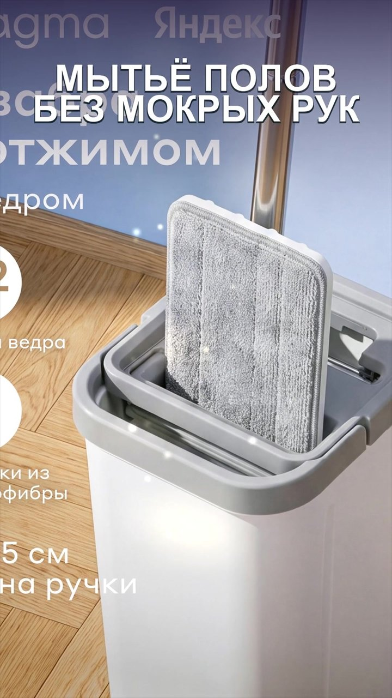
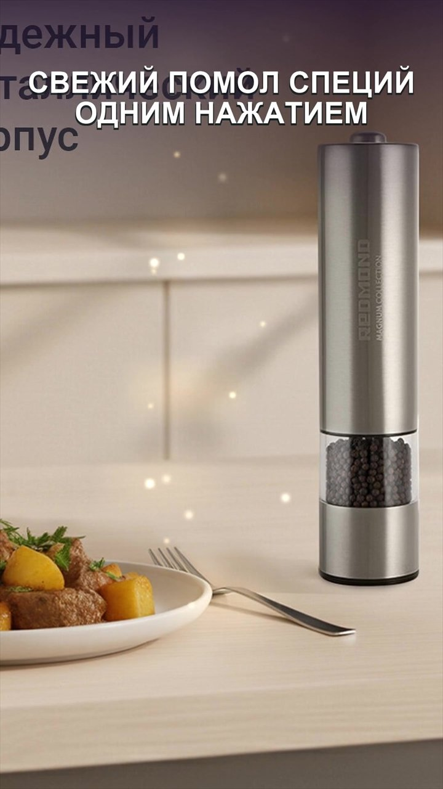
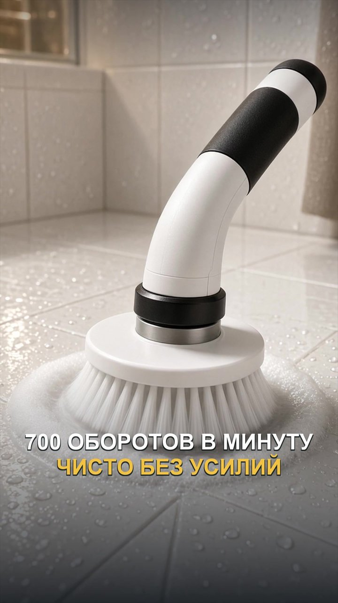
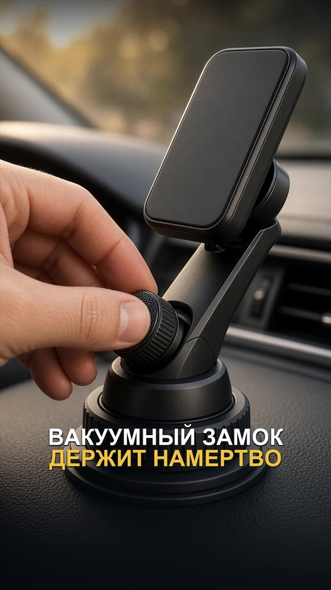
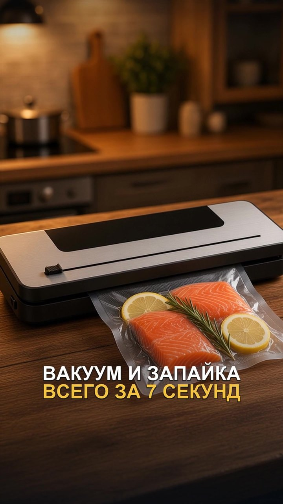

Масло — лёгким облаком
Стеклянный распылитель на 250 мл для масла, уксуса и соусов.
Для кухни, дома и авто.
Находим интересное —
показываем в деле.

Для домаЧистый пол.
Для кухниСвежий помол.
Для уборкиПусть крутитсяМаленькие помощники для обычной жизни
Несколько примеров из наших обзоров.
Полные видео и ссылки на товары — в MAX.
Стеклянный распылитель на 250 мл для масла, уксуса и соусов.
Аккумуляторная модель 9 в 1 с выдвижной ручкой.

Авто Обзор в MAXМагнитный держатель с вакуумной присоской и поворотом.
Электрическая мельница REDMOND с керамическими жерновами.
Швабра Pragma Halbe, ведро 9,2 л и две насадки из микрофибры.

Кухня Обзор в MAXВакууматор с резаком и запайкой пакетов. В обзоре — как им пользоваться.
На фото — кадры наших видео. Наличие и актуальную цену проверяйте по ссылке под обзором.
Здесь — только несколько примеров.
В канале — сами обзоры и всё,
чтобы найти понравившуюся вещь.
Смотри, как устроен товар и как им пользоваться.
Переходи к карточке товара из публикации.
Выбирай то, что пригодится именно тебе.
Это канал с видеообзорами и подборками товаров. Покупки оформляются на маркетплейсах — по ссылкам из публикаций.
Нажми «Обзор в MAX», открой канал и найди нужный товар. Под видео находятся ссылка и артикул.